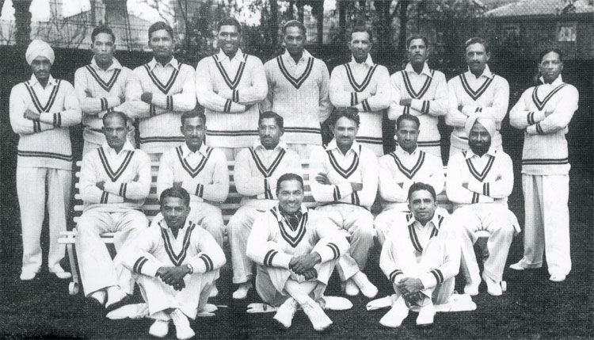

Cricket is a bat-and-ball game played between two teams of eleven players each on a field at the centre of which is a 22-yard (20-metre) pitch with a wicket at each end, each comprising two bails balanced on three stumps.
The sport of cricket has a known history beginning in the late 16th century. Having originated in south-east England, it became an established sport in the country in the 18th century and developed globally in the 19th and 20th centuries. International matches have been played since the 19th-century and formal Test cricket matches are considered to date from 1877. Cricket is the world's second most popular spectator sport after association football (Soccer).
Cricket in India was introduced by Britishers in 1700 and the first match was played in 1721. In 1848 the Parsi community in Bombay formed the Oriental Cricket Club-the first cricket club established by Indians.
In the early 1900s some Indian went on to play for the England cricket team, namely Ranjitsinhji and Duleepsinhji, later their name was used for Ranji Trophy and Duleep Trophy.
In 1911 India team went on the first official tour of the British Isles but only played with English country teams and not with the England cricket team.
India was invited to the imperial cricket Council in 1926 and Indian team made their debut as a test playing nation in England in 1932, led by CK Naidu.
The one-off test match between England and India was played at Lord’s ground in London. India lost the match by 158 runs.
In 1933 India hosted its first test series. The team’s first series as an Independent country was in late 1947, which was against Australia.
India recorded their first test victory in the 24th match against England in Madras in 1952. Later, In the same year they won their first test series which was against Pakistan.
India won their first test series against England at home in 1961-62 and won a home series against New Zealand. India also won its first series outside the subcontinent against New Zealand in 1967- 68.
During the 1970s India saw the emergence of two of the best ever batsmen Sunil Gavaskar and Gundappa Viswanath. These players were responsible for back-to-back series wins in 1971 in West Indies and England, under the captaincy of Ajit Wadekar.
The first one-day international(ODI) was played by India in 1974 against England. Indian began as a weak team in ODI and did not qualify for the second round in the first two editions of the World Cup.
During the 1980s India developed a more attack minded batting line-up with stroke makers such as Mohammad Azharuddin, Dilip Vengsarkar and all-rounder Kapil Dev and Ravi Shastri.
In 1983 India won its first World Cup defeating West Indies in the final at Lord’s and this win changed the History of cricket in india.
In 1984 India won the Asia Cup and in 1985 won the World Championship of Cricket in Australia.
1980s saw Gavaskar and Kapil Dev at the pinnacle of their career. Gavaskar made a test record 34 centuries, he became the first man to reach the 10,000 run mark. Kapil Dev became the highest wicket taker in test cricket with 434 wickets.
In 1989 and 1990 the addition of Sachin Tendulkar and Anil Kumble to the Indian team further improved the team.
Despite the greatest player on their side during the 90s India did not win any of its 33 tests outside the sub continent while they won 17 out of 30 tests at home.
After being eliminated by Sri Lanka in the World Cup semi-final in 1996, the team underwent a lot of changes as Sourav Ganguly and Rahul Dravid became the team captain.
By the beginning of 1998 Tendulkar was the world leading run scorer in both Test and ODI and India enjoyed a home test series win over Australia.
After failing to reach the semifinals in the 1999 World Cup, India suffered a poor loss of 3–0 on a tour of Australia and then 2–0 at home to South Africa.
In 2000 Ganguly was appointed as the new captain and a lot of controversies took place. Azharuddin and Ajay Jadeja were implicated in a match fixing scandal and given a ban. This period was described as the Indian Cricket Worst Hour.
However the new core – Sachin Tendulkar, Rahul Dravid, Anil Kumble and Sourav Ganguly swore not to let this happen to them again and led Indian cricket out of dark times.
The Indian team went from major improvements under the captaincy of Sourav Ganguly and the guidance of John Wright. India maintained their unbeaten home record against Australia in the test series after victory in 2001.
In 2001 India was the joint winner of ICC champions trophy with Sri Lanka and they went to the 2003 cricket World Cup where they reached the final but were beaten by Australia.
2003 to 2004 India was sent to play out a test series in Australia, where they drew 1–1 with the world champions and then won a test and ODI series in Pakistan.
In 2004, India suffered from a lack of form and fitness from their old players. A defeat in a home test series against Australia was followed by an ODI home series defeat against Pakistan.
2005 was the year When the Indian Team saw emergence of players like MS Dhoni, Suresh Raina, Irfan Pathan and Yuvraj Singh. In 2005 India won a home series victory over Sri Lanka and drew a series with South Africa which put India to the second place in ICC ODI rankings.
The beginning of 2007 was a revival of the Indian team under the captaincy of Mahindra Singh Dhoni.
After winning the test series against England in August 2007 Dhoni was made the captain of the Twenty20 and ODI team.
In September 2007 India won their first ever Twenty20 World Cup by Beating Pakistan.
In 2007-08 India toured Australia where India lost the highly controversial home test series 2–1 but managed to win the CV series.
In 2009 India secured the first test series win in New Zealand in 41 years. After beating Sri Lanka 2–0 in December 2009 India became the number one test team in the world.
They retained this ranking by drawing series against South Africa and Sri Lanka. In October 2010 India whitewashed Australia 2–0 in home test series.
On 2 April 2011 India won the 2011 World Cup by defeating Sri Lanka in the final, becoming the third team after West Indies and Australia to win the World Cup twice. India also became the first team to win the World Cup on home soil.
During 2011 England replaced India as the number-one ranked test team. This year saw Retirement of players whose names created history of Cricket in India – Rahul Dravid and VVS Laxman. Sachin Tendulkar retired in November 2013 and Sourav Ganguly retired in 2008.
2011 was a transition period for the Indian cricket team. India was knocked out of the second round of 2012 ICC World Twenty20 and also failed to qualify for the 2012 Asian cup final.
By the early 2013 India Beat Australia 4–0 at home in test series, 3–2 in seven match ODI series and won the one-off T20.
India defeated England in the 2013 ICC champions trophy and MS Dhoni became the first captain in history of Cricket in India to win the three major ICC trophies – ICC cricket World Cup, ICC World Twenty20 and ICC champions trophy.
When the Indian team was touring Australia by the end of 2014 they saw the sudden retirement of MS Dhoni.
India begins to dominate at home in test series under new captain Virat Kohli. They beat South Africa in 2015 and the series was the beginning of an unbeaten streak of 19 test matches. The series also saw the emergence of Ravichandra Ashwin and Ravindra Jadeja.
By 2016 MS Dhoni resigned from captain in limited over and thus handed the captainship to Virat Kohli across all formats.
India beat England across all the three formats with 4–0 win in the test series, followed by a test series win against Bangladesh and Australia. India became the third team to have won their test series against all other test playing nations. India holds an unbeaten record of 8 consecutive test series wins in 2017.
1.Nawab Iftikhar Ali Khan Pataudi is the only cricketer from India to play for both India and England.
2. Sachin Tendulkar has ruled most of the cricket records; has scored the most ODI & Test runs, most fifties, most International centuries and few of the fastest to the multiple of 1000 runs in both ODIs & Test Cricket.
3. With 334 and 619 wickets in the two formats of cricket, Anil Kumble leads the wickets tally for India in One Day Internationals and Test Cricket
4. The Classy VVS Laxman from Hyderabad is the only Cricketer from India to have played 100 Test matches but not a single Cricket World Cup match.
5. India’s 1983 World Cup final’s Hero Mohinder Amarnath has a rare record of being dismissed for handling the ball and obstructing the field both.
6. Original Little Master, Sunil Gavaskar was the first cricketer ever to have crossed the 10,000 runs milestone in Test Cricket. Little known is that he was out thrice for a golden duck.
7. The Master Blaster Sachin Tendulkar who scored over 9000 runs in domestic cricket, a considerable part in Ranji Trophy, was bowled just once for a duck in Ranji Trophy. Did you know who the bowler was? And the bowler was Bhuvneshwar Kumar who went on to play international cricket with him.
8. Bapu Nadkarni of India bowled 131 deliveries without even conceding a single run against England at Chennai (then Madras) in 1964.
9. Rohit Sharma is among the three Indian Cricketers to score an ODI double hundred and he is also the only Cricketer to achieve this milestone thrice. The highest individual score in ODI is under his name.
10. MS Dhoni, the most loved recent cricketing icon from India, is the only cricketer-captain to win all three ICC Tournaments. Others will find it difficult coz Champions Trophy is no longer in the running. India, also, is the only Cricketing nation to have won a 60-Over, a 50-Over and a 20-Over World Cup.
11. Former India Captain, Sourav Ganguly, is the only such cricketer in the history of ODI Cricket to have won four consecutive Man of the Match awards
12. The Indian cricket team is the only team to have been dismissed fully twice in a single day of a test match. This happened against England at Old Trafford in 1952.
13.The Indian skipper Mahendra Singh Dhoni has never scored an ODI century outside Asia.
14. Bhuvneshwar Kumar is only the second batsman in ODIs to be out for a diamond duck (0 off 0 balls) but it was not a run out. He was actually stumped off by a wide delivery on his very first ball.
15.Prabir Sen, hailing from Bengal, India was the only wicket keeper in the cricket history to have stumped Sir Donald Bradman of Australia
16.India is the only country in the world to win 60, 50 and 20-over World Cups.
17.In Ranji Trophy which was played between Bombay and Baroda in 1985, Ravi Shastri was the first Indian to hit 6 sixes in an over.
18.The former Indian captain, Mohammad Azharuddin is the only batsman to score three back to back centuries in his first three test matches.
19.In 2011, India became the first team to win the World Cup as hosts of the final match.
20.Shahid Afridi hit the then fastest ODI century with Sachin Tendulkar's bat
21.Lala Amarnath is the only bowler in the world to dismiss the great Sir Don Bradman hit-wicket in Test cricket.
22. Mansoor Ali Khan Pataudi of India became the youngest ever Test captain at the age of 21.
23.Rahul Dravid and Sachin Tendulkar have been stumped out only once in their Test careers.
24.England lost their last seven wickets for 10 runs against India at Gwalior on March 4, 1993.
25.G.R.Viswanath is the only Indian player to score a duck and a century on debut.